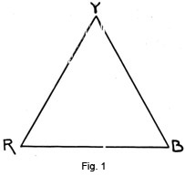
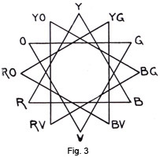
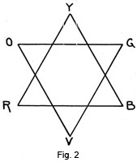
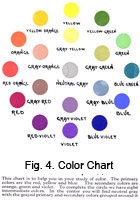
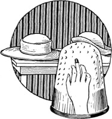

1928—The New-Way Course in Millinery and Hat Design
Lesson 15—Color
Color
Now comes the interesting subject of color.
It is of utmost importance that you have a clear understanding of color and color harmony in connection with your work on design. Just as the artist must know how to mix his paints to achieve the desired effects, you must be able to combine various colors in your hat to create an attractive and harmonious whole.
To be well-designed and well-made a hat should be just right in color, texture and line for the woman who is to wear it. After all, a hat may be beautiful, but if it is not becoming to the woman who wears it, it loses all its charm. To achieve what is commonly known as becomingness we must study color and line very carefully.
When we are planning a hat, for instance, we must consider whether the color enhances the color of the hair or not. We must consider whether it is the right color for the eyes, the complexion, the rest of the costume. If possible, the color should harmonize with the type and the temperament of the wearer, for in this way we achieve a true expression of personality.
We find, therefore, that the shape of the hat and the material used cannot of themselves give the charm that we seek. We must combine with both of these the correct workmanship and the right color. There is in every girl and woman something that is attractive, some one thing that makes the person charming. It is one of the duties of the hat to enhance this particular feature and so conceal those features that are not quite as attractive.
There is so much to say about color; yet in order to get to the very bottom of the subject it would be necessary to use some very technical terms and some more or less complicated material. I do not think the majority of my students would care to go into the subject of color in exactly that way. To some it might be rather tedious reading and I do not want anyone to say that my lessons are dry and uninteresting.
I believe most people who are taking this training want to study color as they would any other interesting subject, for in this case they want to be able to choose the correct colors when making their own pretty clothes. Of course, if one can combine colors well in the selection of clothing, it will not be difficult to apply it to the redecoration of the living room, selecting material for draperies, glass curtains, fancy pillows and little things that help to make a house a real home.
The main object of color in a costume is to obtain a beautiful combination, which will grow more so the longer one looks at it. One problem is to get good color combinations in the use of materials, for texture is as important as color.
Few of my students, while making their own clothes, think of themselves as artists. Let us stop a minute—every time you make a new dress aren't you trying to make yourself just as attractive as you possibly can? If the dress is to be worn in the morning, while you are doing your housework, I am sure you want to look just as nice as any of your friends. Every woman has a natural inborn pride and, of course, wants to look her best. If it is a dress to be worn to the office, you would be widely different from most people if you did not want to present a good appearance. Please do not misunderstand me and think I mean expensively dressed, indeed, I do not mean that at all, just neat and attractive without being overdone.
When you plan a dress or blouse you are building a picture in which, just as in a painted picture, or in a large building, designed by some famous architect, the lines and color must be well organized, rhythmically balanced, proportionate and fitting the purpose intended.
It is the proper choice in the putting together of color effects that you, as an artist in dress, will and must reveal in order to be a real success. The painter does not grind his own color, nor does he prepare his own canvas. As we all know, the colors he works with have a range of light and dark. To be sure these colors are limited compared to the beautiful colors furnished to us by nature, but it is up to him to use his man-made colors to the best advantage. The same applies to you, for you do not dye the materials, nor do you have a thing to do with the different processes through which it must go before it is woven into cloth. However, you must use your own good judgment and combine these colors in exactly the right way. So you see it is within the power of all of us to reveal character and taste.
You will find it a real help in analyzing the color schemes, if you will watch your friends or people you see in the street cars, trains, or on the street. Select some fairly well-dressed woman and judge her clothes as to color, keeping in mind whether or not the colors she has chosen go well with her particular type and figure. How could this woman improve her looks? By choosing another color as trimming could she be made to look more attractive, more pleasing to the eye?
Oftentimes the color scheme is harmonious in itself but will nevertheless violate the sense of harmony because it is not suitable to purpose. Well-chosen colors may look well on one type of person, but the same well-chosen color may be very much out of place on this woman's sister who is light instead of dark. The colors which would look well on a tall, slim woman, who can rightly wear the broad collar, broad sash, elaborate border designs, would not be at all proper for the short, stout woman.
I am sure you can think of many examples along this line.
The age of the person plays some part in the selection of a hat, also the kind of a function at which the hat is to be worn. The season of the year must be considered, not only as to the kind of material but also as to the color.
Perhaps you have seen an elderly woman with very severe features, wearing a dainty, much beflowered hat. It is not at all suited to her type, while a young girl with rosy complexion could wear this hat, and you would declare that it was made particularly for her.
Another violation as to suitability to purpose is noticed when a very elaborate hat is chosen to wear to business. There is really so much room for taste and color effects without resorting to the overdone dress for work. In fact, a harmony which combines common sense and neatness, with pleasing colors chosen in appropriate tones, will do a great deal toward making a favorable impression in the business world. Always remember this and pass on the good news to your friends, for many a good position has been lost merely because the prospect did not look like the quiet, neat, attractive, little lady the employer hoped to add to his office force. In this case clothes really did talk and regardless of the knowledge the young lady may have had stored away in her little head, the fact that she did not know the rules of choosing conservative and appropriate colors lost her a mighty fine position.
It is just these obvious facts which are so often recognized, yet so frequently neglected. For these very reasons I hope to give you some hints as to the color to be selected and the kinds of colors certain types of people may wear.
A Word on the Theory of Color
Colors of objects differ as widely as do their forms. Just as the form or shape of an object may be measured, so may the hue, value and intensity of the color be measured.
Hue
I want to explain this point thoroughly so you will understand exactly what hue means. It is so very important that each color word be kept in its proper place for unless it is, the study of color will be of little value to us. By hue we mean the name of the color such as red, yellow or blue. The difference in the warmth in the color is a variation in hue, or in other words, as red changes toward the orange it has become red orange and has changed its hue.
There are three fundamental hues—red, yellow and blue— which are commonly called the primary colors and from these all the other hues may be made, if mixed in the proper amounts. The triangle shown in Fig. 1 indicates the primary colors. Between the corners of the triangle, as for example, the red and yellow, additional hues may be inserted, which really are the result of the combination of primary colors.
By the mixing of red and yellow we produce; orange, yellow and blue combined gives green; and blue and red makes purple or violet. These colors, green, orange and violet are called the secondary or binary colors. As you will notice we are developing a color chart and are indicating the secondary colors by the second triangle which is placed over the first triangle as shown in Fig. 2. In order to produce one of these secondary colors, it is necessary that we use the two required primaries in equal amounts.
There are further hues known as the intermediate colors which we obtain by mixing equal amounts of a primary and a. secondary and which will fall between the points of Fig. 2. Thus we finally have the completed color diagram as shown by Fig. 3.
You will notice that there are three primary colors, three secondary and six intermediate. Between each of these hues there are many variations depending upon the relative amounts of the primary and secondary colors used in producing the particular intermediate hue. All of the commercial colors, such as henna, gunmetal, jade and amber, are merely different values of the intermediate hues. All such colors may be classified by their position in the color chart and described by the name of the hue which they match.
The color chart shown in Fig. 4 is made by substituting the hues for the letters shown at the points of the diagram in Fig. 3. By using the color instead of the letters I am sure you will get a much better idea, and this chart will be a great help when studying the different points about color. Refer to it often and study it carefully.
The gray tones shown in the center of the color chart will be explained later in the lessons.
Here is another interesting thing about color—the colors are divided into two groups, the warm and the cool hues. Red and orange belong to the warmest, blue and purple to the coldest. As we follow around the diagram through the green, yellow, green and yellow, the colors become increasingly warm. The warm colors are the more pronounced and glaring while we find the cool hues are more quiet and reserved.
The warm colors tend to increase the appearance of size, whereas the cool colors reduce the size of the object. This principle is applied in dress designing in order to make the large, stout person appear smaller and the small, slender person to appear larger. Perhaps you have noticed a very stout woman wearing a large figured, warm colored dress. It may be her favorite color and material, but at the same time she could decrease her size by wearing a cooler color which would be darker, and choosing material which has a smaller, less conspicuous design.
As you might expect, certain colors are more properly used at one season of the year than at another. For instance, the appropriate spring colors begin with the blue and progress around the color chart toward the yellow and continue through the orange for summer, on to the red purple for autumn and finally returning to the blue for late winter.
The warm colors are much more trying on the eyes and nerves, than the cooler shades, especially when used to excess. At the same time the very cold shades may become depressing if not used in good taste.
Value
The value of color is the measure of lightness and darkness. At one end of the scale is white, showing the greatest amount of light, and at the other end of the scale is black. None of the colors shown in the color chart, or any of the intermediate colors not shown are as light as white or as dark as black, but all fall between these two extremes. The value of any particular hue may be determined by properly locating it between extremes of light and dark.
The proper use of color values is of the greatest importance in dress designing, for just as the warm or cold hues add to or detract from the appearance of size, so do the color values. The lighter values increase the size of an object and the darker values have an opposite effect. Doubtless, you have been aware of this fact, for white clothing always makes a person look larger than does a dark color. By using two colors of nearly the same value, very beautiful effects may be obtained, but, of course, this may be carried to extremes, and the result would not be pleasing. If a decided contrast is wanted, then use colors having entirely different color values. Strong contrast of value tends to attract attention and should therefore be used carefully in hat design.
Intensity
Intensity is the measure of brightness and dullness of a color. As any one of the colors of the color chart approaches gray it is said to increase in dullness. To produce a neutral gray, two of the complementary colors in certain proportions are mixed together. And so you won't be confused with all these color words, I am going to tell you that complementary colors are those which are directly opposite each other on the color chart. That is, violet is the complement of yellow, green the complement of red and so on. Refer to Fig. 4 and I am sure you will understand exactly what is meant by complementary colors.
For backgrounds and large areas, colors of lower intensity are preferred to the more brilliant shades, as they are much less trying.
We have discussed the way in which all of the colors shown in the color chart in Fig. 4 have been made by combination of the primary hues, with the exception of the gray tones shown in the center of the chart. These are most important members of the color family, for it is seldom that any of the colors in their fullest intensity or brightness are desirable in dress designing.
When two complementary colors are mixed their intensity is lowered, that is, the color is not as bright as any of the colors shown in the outer circle of the chart. It is in this way that the gray tones shown in the center of the chart are produced.
There are, of course, innumerable variations of intensity between any two of the complementary colors. You will notice that the intensity varies from full brightness to complete neutrality at the center and then increases in brightness to the full intensity at the outside of the chart. Strictly speaking the mixture of the complementary colors in the correct proportions should produce pure white, but because the man-made paints or dyes are more or less impure, the neutral gray results.
You may be wondering what this discussion of the intensity of color has to do with the problem of hat design. Indeed, it plays a very important part, for by knowing that you can emphasize a bit of bright color by surrounding it with a dull one of the same hue or by combining the color which you wish to bring out with a neutral color, such as white, the desired effects can be obtained. It is desirable to soften the intensity of a color and this may be done by combining it with a large area of bright color of nearly the same hue.
Be sure that you do not lose sight of the fact that your good taste may be more often shown by the intensity of the colors you wear than by any other element of your dress. A small person may take much greater liberties in the use of colors of nearly full brightness than the large person.
Before we go to the application of the theory of color to the practical problem of color applied to millinery, I would suggest that you review all of the lesson up to this point, study carefully your color chart and try to find as many colors as possible which you can place between those shown in the chart. Try to classify in this way bits of yarn, pieces of silk, colored paper, or even silk threads. In this way you will develop your color sense so you may recognize quickly and accurately the hue, value and intensity of any color or group of colors with which you may have to work.
Beautiful Colors Correctly Used
In order that you may always have beautiful hats which will be the envy of everyone who looks at them and which will increase your natural attractiveness, the choosing of colors and the combination of them must be carefully considered. When you have learned to do this you will have accomplished one of the most important steps in the art of beautiful hat-making. It is just as essential to fully understand and make use of the proper application of color in design as is the application of any of the other elements of design.
Color Types
It is quite difficult to lay down hard and fast rules as to the colors which different individuals may wear. This may be readily understood, as hardly any two people are identical as to color of hair, eyes, skin and general contour of features and body. All of these points have a direct bearing on the colors which are suitable to be worn. For example, the small, frail, flaxen-haired blonde may be ever so attractive wearing certain colors which on the blonde of practically the same coloring, but having a very large figure, would be most displeasing.
It will be necessary for you, in applying colors in the making of hats for yourself or for others, to study carefully the effect produced by colors of different values and intensity in the particular case with which you are dealing.
In the following pages I am going to give a few suggestions as to the colors suitable for the more common types, but it must be understood that this cannot be applied rigidly in all cases. Frequently you will find that by altering the value or the intensity of a certain hue or by combining it with some other color in the manner explained earlier in the lesson you will be able to produce exactly the effect which you have desired.
If by chance you have found through your own experience that some one of the colors indicated as being suitable for your general type is unbecoming, follow the suggestions I have given you in regard to combinations of hues or the changing slightly of the value of the color or possibly use one of a different intensity, and you will be surprised to find that you have been passing up that particular color which is very becoming to you.
Many people experience difficulty in choosing a hat. Of course, the color must be becoming and at the same time be appropriate and go well with the wardrobe. Complexion and the color of the hair play a very important part. The pale skin must be warmed; the high colored skin must be cooled. At the same time the very red shade of hair must be neutralized and the dull shades of hair toned up.
Let us now take up some of the color types and decide just which colors are most appropriate.
Blondes
In choosing hats the blonde should be especially careful about color. Some blondes work by the rules of contrast, that dark colors make their pale coloring seem even more delicate. It is commonly believed that this idea really works.
Fair Hair and Clear Complexion
This type of blonde may wear pale gray or pink; rose, brown or white, as well as any shade of green, purple or blue. Light shades of brown should ordinarily be avoided because it only dulls the hair and the complexion. It is well to omit any strong color, except in limited quantities.
Brown Hair and Pale Complexion
The colors commonly selected by this type should be blue, blue green, emerald and turquoise. Chestnut brown is becoming also wine color cerise and some shades of red. Pink is often worn, and shades of violet. Care must be taken in selecting shades of green for they are not usually becoming to this type. Also avoid gray, yellow or dull brown.
Golden Hair and High Color
Choose buff color and soft tans and combine them with black or a dark shade. Gray may be worn, brown, olive green, pale or dark blues, especially in dull shades. Beware of all bright shades of any color, and above all avoid bright red, blue, pink and yellow.
Light Hair and Sallow Complexion
This type can wear the brighter colors such as crimson and wine shades. Warm browns are becoming, also medium and dark blues. Some of the dull shades of green are becoming, and emerald, pink and cerise may be worn in small quantities. The following colors should be avoided: dull grays or dull browns.
Titian or Red Hair and White Skin
Greens in dark and light shades may be chosen; almost any shade of dark or light blue is becoming. Rich browns are good, also soft grays; black may be worn, also cream and ivory. Beware of bright greens, blues, purples and reds.
Brunettes
Brown Hair and Clear Complexion
If this type of person has a fair skin and plenty of color in her cheeks she need not be afraid to wear any shade or any color. Of course, if she finds according to her own individual type that certain colors are not as becoming as others, she should by all means select the most becoming colors.
Dark Hair, Clear Olive Complexion
Providing this type of person has a little color, navy blue, olive and certain shades of green will be becoming, as well as cerise, pink, red, maize and dark blue. Do not select pale blue or yellows.
Dark Hair and Sallow Complexion
Navy or dark blues are good. Browns if a warm brown is selected, dark shades of green if relieved by touches of pink. Dark red is becoming, also yellow or flame color. Avoid dead shades of gray and brown, also pale yellow and blue.
I hope you have found the study of color interesting, for it is so very important. The subject might have been covered in a much more technical way, but I believe it is your desire to learn the practical side of the question with just enough of the theory so that you may understand why certain of the colors go together and make a beautiful hat while others clash so violently.
The appreciation of color is instinctive with nearly all of us from infancy, although sometimes we do not realize it. Color is manifested in all of Nature, for though she molds everything into beautiful shades, harmonious as to line, perfect as to balance, and with the rhythm of the master hand, without color her work would be flat, meaningless and without inspiration. Beauty brings happiness to us, makes us more cheerful and life in general more pleasant, and nothing contributes more toward beauty than the proper use of color.
LESSONS 14 AND 15
QUESTIONS
1. Before the milliner can create a beautiful hat what must she know?
2. The progressive milliner never ceases to study styles. How is this accomplished?
3. What is one of the characteristics of good design?
4. What type of hat should be avoided by the small-faced, short woman?
5. What do you mean by the 8 points of a hat?
6. What is the main object of color in a costume or hat?
7. What is hue?
8. What is value?
9. What is intensity?
10. Name the primary and secondary colors.